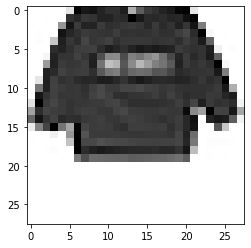
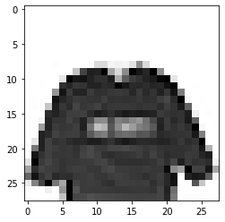
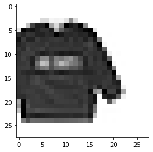
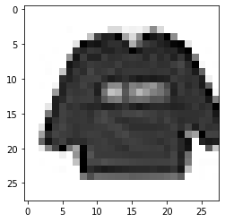

Building a layered API with Fashion MNIST
We’re going to build up a simple Deep Learning API inspired by fastai on Fashion MNIST from scratch. Humans can only fit so many things in their head at once (somewhere between 3 and 7); trying to grasp all the details of the training loop at once is difficult, especially as we add more features to it. The right abstractions can make this much easier by only having to think about what we’re changing in the interface. Coming up with a good abstraction that generalises across many usecases is hard, so we’re going to use the fast.ai interface.
Then to show how it’s useful once we have our training loop we’ll see how we can change the model and retrain.
This post was generated with a Jupyter notebook. You can also view this notebook on Kaggle or download the Jupyter notebook.
Basic Training Loop
We’re going to start where we finished with Peeling fastai’s layered API with Fashion MNIST with a very low level training loop.
We’ll use only a few imports.
import numpy as np
from torch import tensor, empty, stack, arange, randn, randperm, no_grad
from torch.nn.functional import cross_entropyWe have a two layer neural net with random parameters
def init_params(size, std=1.0): return (randn(size)*std).requires_grad_()
w1, b1 = init_params((784, 100)), init_params((100,))
w2, b2 = init_params((100, 10)), init_params((10,))
params = [w1, w2, b1, b2]
def model(x):
act1 = x@w1 + b1
act2 = act1 * (act1 > 0)
act3 = act2@w2 + b2
return act3Load in the training data and create a validation split
data = np.loadtxt('../input/fashionmnist/fashion-mnist_train.csv', skiprows=1, delimiter=',')
valid_mask = np.random.choice([True, False], len(data), p=(0.2, 0.8))
X_train, y_train = tensor(data[~valid_mask, 1:].astype(np.float32) / 255.), tensor(data[~valid_mask,0].astype(np.int64))
X_valid, y_valid = tensor(data[ valid_mask, 1:].astype(np.float32) / 255.), tensor(data[ valid_mask,0].astype(np.int64))Define accuracy; how often the most probable class is the correct class
def accuracy(pred, y): return sum(y.flatten() == pred.argmax(axis=1)) / len(y)It should start off around 10%, since there are 10 classes with equal data.
accuracy(model(X_valid), y_valid)tensor(0.1191)And run our training loop
batch_size = 2048
lr = 0.2
for epoch in range(5):
for _batch in range(len(X_train) // batch_size):
# Data loader
idx = np.random.choice(len(X_train), batch_size, replace=False)
X, y = X_train[idx], y_train[idx]
pred = model(X)
loss = cross_entropy(pred, y)
loss.backward()
with no_grad():
for p in params:
p -= lr * p.grad
p.grad.zero_()
print(epoch, accuracy(model(X_valid), y_valid))0 tensor(0.5306)
1 tensor(0.5884)
2 tensor(0.6121)
3 tensor(0.6290)
4 tensor(0.6440)Abstracting the Optimiser
In PyTorch terms the Optimizer is the thing that stores the parameters, updates them by their parameters and can zero their gradients. It’s what we use in the torch.no_grad.
From a mathematical perspective I’d call the whole training loop the optimizer; it’s finding the parameters that minimize the loss. But the optimizer is a convenient abstraction because there are many other gradient based alternatives to Stochastic Gradient Descent.
We’ll create a simplified version of the PyTorch optimizer for Stochastic Gradient Descent (a fastai Optimizer is a little different but they provide OptimWrapper for compatibility).
class SGD():
def __init__(self, params, lr):
self.params = list(params)
self.lr = lr
def step(self):
for p in self.params:
p -= lr * p.grad
def zero_grad(self):
for p in self.params:
p.grad.zero_()Reset the parameters
w1, b1 = init_params((784, 100)), init_params((100,))
w2, b2 = init_params((100, 10)), init_params((10,))
params = [w1, w2, b1, b2]And training gives about the same accuracy as before. The benefit here is we can now drop in a different optimizer.
batch_size = 2048
optim = SGD(params, lr=0.2)
for epoch in range(5):
for _batch in range(len(X_train) // batch_size):
idx = np.random.choice(len(X_train), batch_size, replace=False)
X, y = X_train[idx], y_train[idx]
pred = model(X)
loss = cross_entropy(pred, y)
loss.backward()
with no_grad():
optim.step()
optim.zero_grad()
print(epoch, accuracy(model(X_valid), y_valid))0 tensor(0.6504)
1 tensor(0.6775)
2 tensor(0.6870)
3 tensor(0.6964)
4 tensor(0.7051)2. Abstracting the model
We’ve been manually tracking our parameters for the Optimizer, but it would be nice just to get it out of the module. PyTorch’s nn.module does this by tracking all Parameters in the class and recursively any submodules.
The Parameter idea is important because we don’t want to differentiate every method. Parameter itself seems to have deep magic in it’s source; in particular it calls Tensor._make_subclass. We’ll just manually track the parameters for now.
def init_params(size, std=1.0): return (randn(size)*std).requires_grad_() A Linear layer has the weight and the bias, and does a matrix multiplication.
We’ll provide a way to reset the parameters (to restart model training), and to get the parameters for the optimizer.
class Linear:
def __init__(self, in_features, out_features):
self.in_features = in_features
self.out_features = out_features
self.weight = empty((self.in_features, self.out_features), requires_grad=True)
self.bias = empty(self.out_features, requires_grad=True)
self.reset_parameters()
def __call__(self, x):
return x @ self.weight + self.bias
def reset_parameters(self):
with no_grad():
# Update the weights in place, otherwise the optimizer will point to the old weights
self.weight[:] = init_params((self.in_features, self.out_features))
self.bias[:] = init_params(self.out_features)
def parameters(self):
return [self.weight, self.bias]The ReLU is a simple function with no parameters
class ReLU():
def __call__(self, x):
return x * (x > 0)
def reset_parameters(self):
pass
def parameters(self):
return []To combine them we use a Sequential wrapper which just holds the other models.
class Sequential():
def __init__(self, *modules):
self.modules = modules
def __call__(self, x):
for module in self.modules:
x = module(x)
return x
def reset_parameters(self):
for module in self.modules:
module.reset_parameters()
def parameters(self):
return (parameter for module in self.modules for parameter in module.parameters())We can now rewrite our model in a much simpler way. It’s easier to see here how to add or remove layers.
model = Sequential(
Linear(784, 100),
ReLU(),
Linear(100, 10),
)accuracy(model(X_valid), y_valid)tensor(0.0996)Our training is the same as before, but we can now just pass the model parameters onto the optimizer rather than tracking them manually.
batch_size = 2048
optim = SGD(model.parameters(), lr=0.2)
for epoch in range(5):
for _batch in range(len(X_train) // batch_size):
idx = np.random.choice(len(X_train), batch_size, replace=False)
X, y = X_train[idx], y_train[idx]
pred = model(X)
loss = cross_entropy(pred, y)
loss.backward()
with no_grad():
optim.step()
optim.zero_grad()
print(epoch, accuracy(model(X_valid), y_valid))0 tensor(0.5299)
1 tensor(0.5669)
2 tensor(0.6272)
3 tensor(0.6368)
4 tensor(0.6443)Let’s check resetting the parameters puts the accuracy back down to ~10%
accuracy(model(X_valid), y_valid)tensor(0.6443)model.reset_parameters()accuracy(model(X_valid), y_valid)tensor(0.1337)Dataloader
The logic to iterate through the data is pretty cumbersome, PyTorch provides a DataLoader abstraction that can wrap a Dataset, iterate through the indices, and output batches of tensors in an efficient way.
Let’s start with a
dataset = list(zip(X_train, y_train))
seq = randperm(len(dataset))
seqtensor([38425, 7127, 40663, ..., 40637, 15060, 16765])Get a batch, here of size 4
batch_idxs = seq[:4]
batch_idxstensor([38425, 7127, 40663, 38173])When we get the elements it has both the Xs and the ys together
batch = [dataset[idx] for idx in batch_idxs]We can unpack them to get tuples of tensors
Xs, ys = zip(*batch)
type(Xs), len(Xs), type(ys), len(ys)(tuple, 4, tuple, 4)Then we can collate them into a batch by stacking them
X = stack(Xs)
y = stack(ys)
X.shape, y.shape(torch.Size([4, 784]), torch.Size([4]))We can iterate over minibatches with this little generator pattern
seq = arange(22)
[seq[i:i+5] for i in range(0, len(seq), 5)][tensor([0, 1, 2, 3, 4]),
tensor([5, 6, 7, 8, 9]),
tensor([10, 11, 12, 13, 14]),
tensor([15, 16, 17, 18, 19]),
tensor([20, 21])]Let’s put all this into a class
class DataLoader:
def __init__(self, dataset, batch_size=1, shuffle=False):
self.batch_size = batch_size
self.dataset = dataset
self.shuffle = shuffle
def __iter__(self):
seq = randperm(len(self)) if self.shuffle else arange(len(self))
for batch_idxs in [seq[i:i+self.batch_size] for i in range(0, len(seq), self.batch_size)]:
batch = [self.dataset[idx] for idx in batch_idxs]
Xs, ys = zip(*batch)
X, y = stack(Xs), stack(ys)
yield X, y
def __len__(self):
return len(self.dataset)And we get a similar performance to before
model.reset_parameters()
ds_train = list(zip(X_train, y_train))
dl_train = DataLoader(ds_train, batch_size=2048, shuffle=True)
for epoch in range(5):
for X, y in dl_train:
pred = model(X)
loss = cross_entropy(pred, y)
loss.backward()
with no_grad():
optim.step()
optim.zero_grad()
print(epoch, accuracy(model(X_valid), y_valid))0 tensor(0.5396)
1 tensor(0.5852)
2 tensor(0.6102)
3 tensor(0.6212)
4 tensor(0.6303)Running metrics
If we want to evaluate on large datasets we need a way to accumulate the metric over minibatches.
How this is framed is surprisingly non-standard; we’ll keep to the spirit of fastai (but not the implementation which uses callbacks), but there’s also an external library torchmetrics, and huggingface have a different concept of Metric.
ds_valid = list(zip(X_valid, y_valid))
dl_valid = DataLoader(ds_valid, batch_size=2048, shuffle=False)accuracy(model(X_valid), y_valid)tensor(0.6303)To calculate a running metric we’ll just add the accuracy, weighted by the size of the sample, divided by the length of the dataset.
def running(metrics, dl, model):
values = [0.] * len(metrics)
N = len(dl)
for X, y in dl:
pred = model(X)
for idx, metric in enumerate(metrics):
values[idx] += metric(pred, y) * len(X) / N
return [v.item() if hasattr(v, 'item') else v for v in values]This gives a similar result to before.
Here we track:
- loss on the training set
- loss on validation set
- accuracy
Ideally we’d calculate a running total of loss on the training set, but this is good enough for now.
model.reset_parameters()
# Note: reset creates new parameters. Could we update them instead?
optim = SGD(model.parameters(), lr=0.2)
ds_train = list(zip(X_train, y_train))
dl_train = DataLoader(ds_train, batch_size=2048, shuffle=True)
metrics = [cross_entropy, accuracy]
for epoch in range(5):
for X, y in dl_train:
pred = model(X)
loss = cross_entropy(pred, y)
loss.backward()
with no_grad():
optim.step()
optim.zero_grad()
print(epoch, *running([cross_entropy], dl_train, model), *running(metrics, dl_valid, model))0 2.9654173851013184 2.9218735694885254 0.5206032991409302
1 2.110874652862549 2.095884323120117 0.5787869095802307
2 1.7752487659454346 1.7723487615585327 0.6119169592857361
3 1.5830714702606201 1.5869991779327393 0.6269984841346741
4 1.4491684436798096 1.4574403762817383 0.6405142545700073Learner
We can now package up all our objects into a single class, our Learner.
from dataclasses import dataclass
from typing import Callable, List
class Learner:
def __init__(self,
dl_train: DataLoader,
dl_valid: DataLoader,
loss_func: Callable,
model: Callable,
lr: float,
opt_func: Callable = SGD,
metrics: List[Callable] = None):
self.dl_train = dl_train
self.dl_valid = dl_valid
self.loss_func = loss_func
self.model = model
self.lr = lr
self.optim = opt_func(model.parameters(), lr)
self.metrics = metrics if metrics is not None else [loss_func]
def reset(self):
self.model.reset_parameters()
def fit(self, n_epoch):
for epoch in range(n_epoch):
for X, y in self.dl_train:
pred = self.model(X)
loss = self.loss_func(pred, y)
loss.backward()
with no_grad():
self.optim.step()
self.optim.zero_grad()
print(epoch, *running([self.loss_func], self.dl_train, self.model), *running(self.metrics, self.dl_valid, self.model))metrics = [cross_entropy, accuracy]
learn = Learner(dl_train, dl_valid, cross_entropy, model, 0.2, SGD, metrics)We can now train this for a bunch of epochs, getting around 74% accuracy.
model.reset_parameters()
learn.fit(40)0 3.2126216888427734 3.283143997192383 0.5618098378181458
1 2.278181314468384 2.346566915512085 0.5942805409431458
2 1.8557775020599365 1.910788655281067 0.6112576127052307
3 1.6559522151947021 1.710391640663147 0.6208175420761108
4 1.5421751737594604 1.5935988426208496 0.634827733039856
5 1.3805128335952759 1.4289369583129883 0.6319432854652405
6 1.3306803703308105 1.3788357973098755 0.6361463665962219
7 1.2377548217773438 1.2862215042114258 0.6534531116485596
8 1.2100512981414795 1.2579960823059082 0.6574913263320923
9 1.152338981628418 1.19868803024292 0.6574089527130127
10 1.1125177145004272 1.159442663192749 0.6635899543762207
11 1.083337426185608 1.1281803846359253 0.6678754091262817
12 1.0920311212539673 1.137237787246704 0.6494148373603821
13 1.0610631704330444 1.1104097366333008 0.6719960570335388
14 1.0184332132339478 1.0690116882324219 0.6782594323158264
15 1.0005489587783813 1.0493626594543457 0.668452262878418
16 1.0299843549728394 1.076596736907959 0.6588099598884583
17 0.9529225826263428 1.0024800300598145 0.6869127750396729
18 0.9454663991928101 0.9934449195861816 0.6875721216201782
19 0.9428024291992188 0.9916077852249146 0.6855117678642273
20 1.0193240642547607 1.0734479427337646 0.6656501889228821
21 0.9028168320655823 0.9518789052963257 0.6953189373016357
22 0.8912039399147034 0.9412692785263062 0.6947420239448547
23 0.8915138244628906 0.9431529641151428 0.6955661773681641
24 0.9840039014816284 1.0355738401412964 0.6888906955718994
25 0.8699730634689331 0.9195016622543335 0.6972144246101379
26 0.8723984956741333 0.9201793670654297 0.7049612998962402
27 0.8572273254394531 0.9069074392318726 0.7002636790275574
28 0.8710482716560364 0.9210841655731201 0.6866655945777893
29 0.9071570634841919 0.956194281578064 0.6764463186264038
30 0.8600081205368042 0.9094617366790771 0.6917752027511597
31 0.825920045375824 0.8766304850578308 0.7071864008903503
32 0.8200230598449707 0.8686937093734741 0.7075160145759583
33 0.8196104168891907 0.8700741529464722 0.7092467546463013
34 0.8026244044303894 0.8533946871757507 0.7150980234146118
35 0.8220050930976868 0.8715838193893433 0.7010878324508667
36 0.7956870794296265 0.8447741270065308 0.7160870432853699
37 0.7948266863822937 0.8461573123931885 0.7127904891967773
38 0.8521597981452942 0.899774432182312 0.7057029604911804
39 0.7868410348892212 0.8378427624702454 0.7184770107269287The benefits of abstraction
Now that we everything in our learner it’s much easier to focus on small changes to the components.
Changing the model: Init well
Let’s put a torch linear layer in our model
import torch.nntorch_model = Sequential(
torch.nn.Linear(784, 100),
ReLU(),
torch.nn.Linear(100, 10),
)In just a few epochs it outperforms our previous model. What does it do differently?
torch_learn = Learner(dl_train, dl_valid, cross_entropy, torch_model, lr=2, metrics=metrics)
torch_learn.fit(10)0 1.0736732482910156 1.068850040435791 0.6171913743019104
1 0.8725801706314087 0.8647670149803162 0.7031481862068176
2 0.7314574718475342 0.7330614328384399 0.7289434671401978
3 0.6415749788284302 0.6435913443565369 0.7758365273475647
4 0.6304138898849487 0.6356835961341858 0.776248574256897
5 0.6219738721847534 0.6234530210494995 0.7640514373779297
6 0.6262473464012146 0.6312569975852966 0.7718806862831116
7 0.5853808522224426 0.5870252251625061 0.7842426896095276
8 0.5925256013870239 0.591513991355896 0.7968518137931824
9 0.5194151401519775 0.523120641708374 0.8157244324684143Looking at the source we see this:
def reset_parameters(self) -> None:
# Setting a=sqrt(5) in kaiming_uniform is the same as initializing with
# uniform(-1/sqrt(in_features), 1/sqrt(in_features)). For details, see
# https://github.com/pytorch/pytorch/issues/57109
init.kaiming_uniform_(self.weight, a=math.sqrt(5))
if self.bias is not None:
fan_in, _ = init._calculate_fan_in_and_fan_out(self.weight)
bound = 1 / math.sqrt(fan_in) if fan_in > 0 else 0
init.uniform_(self.bias, -bound, bound)Looking up Kaiming Initialisation brings us to this paper which says:
This leads to a zero-mean Gaussian distribution whose standard eviation (std) is \(\sqrt{2/n_l}\). This is our way of initialization. We also initialize b=0.
Let’s try this
class LinearKaiming(Linear):
def reset_parameters(self):
with no_grad():
self.weight[:] = init_params((self.in_features, self.out_features), np.sqrt(2/self.in_features))
self.bias[:] = torch.zeros_like(self.bias)We get similar performance to the torch model. Initialisation is very important in deep networks, but even in this small model it makes a difference.
model_kaiming=Sequential(
LinearKaiming(784, 100),
ReLU(),
LinearKaiming(100, 10),
)
learn = Learner(dl_train, dl_valid, cross_entropy,
model_kaiming, 0.2, SGD, metrics)
learn.fit(25)0 0.9928680658340454 0.9959338307380676 0.6848524212837219
1 0.7061344981193542 0.7092622518539429 0.7604252099990845
2 0.6784164309501648 0.6813119649887085 0.7513598203659058
3 0.6543854475021362 0.6544392108917236 0.7633921504020691
4 0.5760871767997742 0.5763159990310669 0.796934187412262
5 0.557142436504364 0.56104975938797 0.8028680086135864
6 0.54227215051651 0.5469540953636169 0.8106972575187683
7 0.5124587416648865 0.5161428451538086 0.8195978403091431
8 0.5065622925758362 0.5089733600616455 0.8235536217689514
9 0.505312979221344 0.512185275554657 0.8147355318069458
10 0.467585027217865 0.47441017627716064 0.8371517658233643
11 0.4726341962814331 0.48188284039497375 0.8276743292808533
12 0.5650492906570435 0.577560305595398 0.7956980466842651
13 0.48750507831573486 0.4999195337295532 0.8224822878837585
14 0.46887752413749695 0.47312453389167786 0.8339377045631409
15 0.49850377440452576 0.5068738460540771 0.8112741708755493
16 0.5208178758621216 0.524056077003479 0.8047634363174438
17 0.4367881417274475 0.4461600184440613 0.8406955599784851
18 0.424231618642807 0.43466717004776 0.8458051681518555
19 0.42923012375831604 0.4422001242637634 0.8415196537971497
20 0.41786298155784607 0.4280512034893036 0.8490192890167236
21 0.4344097375869751 0.44265565276145935 0.8430030941963196
22 0.41013529896736145 0.42235079407691956 0.8530575633049011
23 0.40650057792663574 0.4197377562522888 0.8546233773231506
24 0.4036029875278473 0.4160078763961792 0.8495961427688599Changing the optimizer
We could just drop in another optimizer; in this case using momentum with SGD may improve the result a little (or may not change it much).
from torch.optim import SGD as SGDTorchmodel_kaiming.reset_parameters()
optim = lambda params, lr: SGDTorch(params, lr, momentum=0.5)
learn = Learner(dl_train, dl_valid, cross_entropy,
model_kaiming, 0.2, optim, metrics)
learn.fit(25)0 0.7095286846160889 0.7120507955551147 0.7463326454162598
1 0.6111636161804199 0.614683985710144 0.7810285091400146
2 0.5852203965187073 0.5961494445800781 0.7928135991096497
3 0.538330078125 0.5422188639640808 0.8088841438293457
4 0.4959908723831177 0.5010000467300415 0.8273446559906006
5 0.46879303455352783 0.47862324118614197 0.8326190710067749
6 0.46012142300605774 0.4713790714740753 0.8298170566558838
7 0.49200674891471863 0.5036535263061523 0.8119333982467651
8 0.44662147760391235 0.4583902060985565 0.8379758596420288
9 0.4196605086326599 0.431936651468277 0.849843442440033
10 0.4195310175418854 0.43150192499160767 0.8476182818412781
11 0.42625564336776733 0.4413745701313019 0.8369045853614807
12 0.4185228943824768 0.4318638741970062 0.8504202961921692
13 0.43430835008621216 0.44915223121643066 0.8333607912063599
14 0.3900304138660431 0.4056735634803772 0.8563540577888489
15 0.4116860628128052 0.42807069420814514 0.8497610092163086
16 0.39633578062057495 0.41715002059936523 0.8544585704803467
17 0.39409390091896057 0.4102632999420166 0.852810263633728
18 0.4003596007823944 0.41932418942451477 0.8504202961921692
19 0.4005998373031616 0.4219740033149719 0.8517389297485352
20 0.3628465533256531 0.38566774129867554 0.8639360666275024
21 0.3597981333732605 0.38302478194236755 0.8611340522766113
22 0.3617080748081207 0.3834376931190491 0.8606395125389099
23 0.3500443696975708 0.37230318784713745 0.8678918480873108
24 0.3509939908981323 0.37478601932525635 0.8661612272262573Changing the data preparation
Let’s try some data augmentation by moving the image around a few pixels
x = X_train[0,:]
img = x.reshape(28,28)
import matplotlib.pyplot as plt
plt.imshow(img, cmap='Greys')<matplotlib.image.AxesImage at 0x7fda5974b4d0>
def shift_down(img, px):
return torch.cat([img[px:,:], torch.zeros((px, 28))], axis=0)
plt.imshow(shift_down(img, 5), cmap='Greys')<matplotlib.image.AxesImage at 0x7fda74b064d0>
def shift_up(img, px):
return torch.cat([torch.zeros((px, 28)), img[:-px,:]], axis=0)
plt.imshow(shift_up(img, 5), cmap='Greys')<matplotlib.image.AxesImage at 0x7fda749f4f90>
def shift_left(img, px):
return torch.cat([img[:,px:], torch.zeros((28, px))], axis=1)
plt.imshow(shift_left(img, 5), cmap='Greys')<matplotlib.image.AxesImage at 0x7fda7497b790>
def shift_right(img, px):
return torch.cat([torch.zeros((28, px)), img[:,:-px]], axis=1)
plt.imshow(shift_left(img, 5), cmap='Greys')<matplotlib.image.AxesImage at 0x7fda748b2650>
max_px = 4
def augment(x):
img = x.reshape(28, 28)
px = np.random.choice(max_px)
direction = np.random.choice([shift_left, shift_right, shift_up, shift_down])
if px > 0:
img_aug = direction(img, px)
else:
img_aug = img
return img_aug.reshape(784)class AugmentedDataset:
def __init__(self, X, y):
self.X = X
self.y = y
def __getitem__(self, idx):
x, y = self.X[idx], self.y[idx]
return (augment(x), y)
def __len__(self):
return len(self.X)ds_train_aug = AugmentedDataset(X_train, y_train)
x, y = ds_train_aug[0]
plt.imshow(x.reshape(28,28), cmap='Greys')<matplotlib.image.AxesImage at 0x7fda74838550>
dl_train_aug = DataLoader(ds_train_aug, batch_size=2048, shuffle=True)In this case it runs much slower and doesn’t seem to help accuracy. Part of the reason is the images are already centre cropped, and partly because the model isn’t overfitting
model_kaiming.reset_parameters()
learn = Learner(dl_train_aug, dl_valid, cross_entropy,
model_kaiming, 0.2, optim, metrics)
learn.fit(25)0 0.9459271430969238 0.8129678964614868 0.6981209516525269
1 0.8096525073051453 0.6903409957885742 0.7617438435554504
2 0.75916588306427 0.6435797214508057 0.7655348777770996
3 0.700350821018219 0.5925891995429993 0.7825943231582642
4 0.6793506145477295 0.5671628713607788 0.7970990538597107
5 0.6965213418006897 0.5861883759498596 0.7941321730613708
6 0.6404217481613159 0.5299636721611023 0.8166309595108032
7 0.6351646780967712 0.5255049467086792 0.8096258044242859
8 0.6616714596748352 0.5531866550445557 0.7875391244888306
9 0.6078921556472778 0.500901460647583 0.8247074484825134
10 0.6014565229415894 0.49837130308151245 0.8200098872184753
11 0.5962222218513489 0.49347034096717834 0.8232240676879883
12 0.5720757246017456 0.46911317110061646 0.8345145583152771
13 0.6007265448570251 0.5005905628204346 0.8212461471557617
14 0.5890061259269714 0.4858257472515106 0.8227295279502869
15 0.5596734285354614 0.45629531145095825 0.8341848850250244
16 0.5409436225891113 0.43999066948890686 0.8436623811721802
17 0.5416392683982849 0.4470728635787964 0.8376463055610657
18 0.5247928500175476 0.43264240026474 0.8466293215751648
19 0.5334455370903015 0.43657636642456055 0.843085527420044
20 0.5187790989875793 0.4266170859336853 0.8481951951980591
21 0.5217541456222534 0.42955103516578674 0.8464644551277161
22 0.5468143224716187 0.4574260413646698 0.8328663110733032
23 0.5068327784538269 0.41916394233703613 0.8508323431015015
24 0.5027770400047302 0.4133780896663666 0.8533872365951538And more
The powerful thing is these same abstractions can be used to build state of the art models (with a little more flexibility in terms of callbacks) across a wide variety of tasks; taking input from images, text, tabular, audio and more to output a class, a number (regression) or even text or an image (think speech to text, or caption generation).